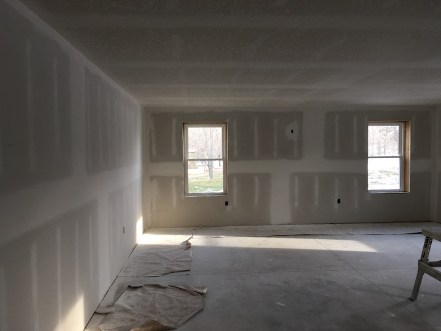
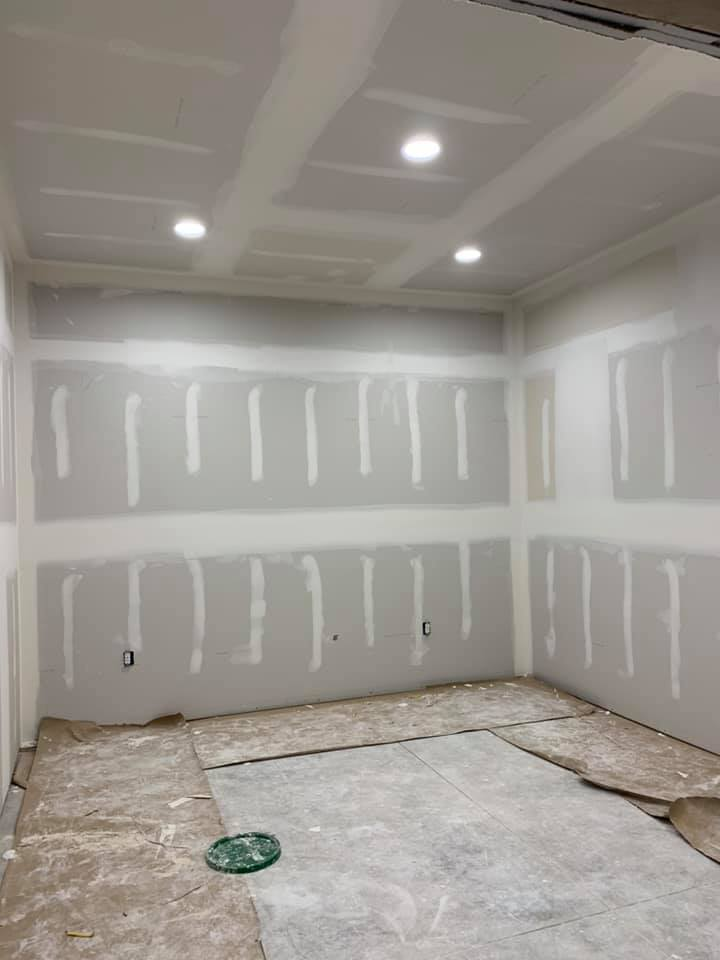

January 2020
About a week ago a young man who is part of our Lighthouse family reached out to me over a series of text messages that started with “I feel like I need to talk” and ended with “Instead of thinking about the things I should be thinking about, I find myself constantly doing things to distract myself from reality. I just feel like I’m drowning and do not know what to do.” A long texting conversation followed, over the course of a few days, as I helped him walk through what Hebrews 12 says, “Let us throw off everything that hinders us and the sin that so easily entangles and let us run with perseverance the race marked out for us.” He completely owns where he is at - but has felt trapped, “drowning” for a while now, hindered and entangled in the consequences of his choices.
Our enemy has been playing this hand for centuries, tricking us into thinking this person, this activity, or this thing will finally make us happy. Once we’ve been snared and we realize that the promise was a lie, we then tend to choose to either live in denial or stay trapped by the guilt and shame. The enemy then assaults you with “you’re so stupid” and “you better not tell this to anyone,” working hard to convince you that telling the truth and asking for help out of the trap will never work. It takes great courage to finally do it, to reach out and say, “I have gotten myself in a mess and I need help.” Oh man - I want Lighthouse to be full of the kind of people who celebrate at that moment; people who respond just like the forgiving father in Luke 15, who when he saw his son returning home after squandering his inheritance told his servants to bring a ring and a robe for his son and to prepare a feast, saying “For this son of mine was dead and is alive again, he was lost and now is found.”
This father knew that while the lost inheritance was deeply painful for the son, what mattered most was that their relationship was restored. I love making sure that kids know telling the truth is a good thing, that being honest (instead of hiding or pretending) is the way to build trust and strengthen relationships and is the key to finding the real peace and joy that Jesus brings. The most requested song for the last few months at our weekly Lighthouse gatherings has been “Truth Be Told,” by Matthew West. The song ends with these words:
Can I really stand here unashamed?
And know that your love for me won’t change
Oh God, if that’s really true, Then let the truth be told
This past year I’ve had young people come to me trapped in all kinds of unfortunate scenarios - self-harm, pregnancy, addictions (usually pornography), poverty, etc. I love being able to sit with them, listen to their plea for help and say, “Wow, telling me that took a lot of courage, I am so proud of you.” I know that this is what we have been called to do here - to be “The Lighthouse” that young people know about and can run to when things are out of control. A place where they can safely and completely tell their stories.
So many of you give monthly to support this outreach and yet you never get to be here, never get to see what its like, never get to stand next to these kids who soak up love like dry sponges. Thank you for your faithfulness, for continuing to believe that your sacrifices are being put to good use. Many people, when they first hear about The Lighthouse, say nice encouraging things about what a good thing it is that we are doing. But when they hear that this outreach in little old Bunker Hill, Indiana is 100% staffed with volunteers and operates solely from donations mailed or hand-delivered, and that we’re about to complete construction on a 7200 square foot youth center paid for with cash, they realize that there is something more happening here than just “a good thing.” We could not do this without your help. Those of you who give are as much a part of what is happening as those who are serving on Wednesday nights. This year we received over $60,000 in donations, enabling us to continue construction almost to completion. All of the framing, electric, plumbing, heating and cooling (except for the gas lines), and almost all of the drywall, is now complete. I’ve included some pictures so you can see for yourself. Hopefully we’ll be able to move in and start using the building this spring. If you would like to come checkout the building I would love to show it to you.
 Gratefully,

Chris Edgington, Director
For more information about our vision for this outreach, you can read more of our newsletters at this link. You can also contact me directly at chris@LHBH.org and 765-271-6687. I would love to come share our story with your group. If you would like to send a gift, you can mail it to The Lighthouse, PO Box 336, Bunker Hill, IN 46914. You can also give electronically via the link below at the bottom of each page.